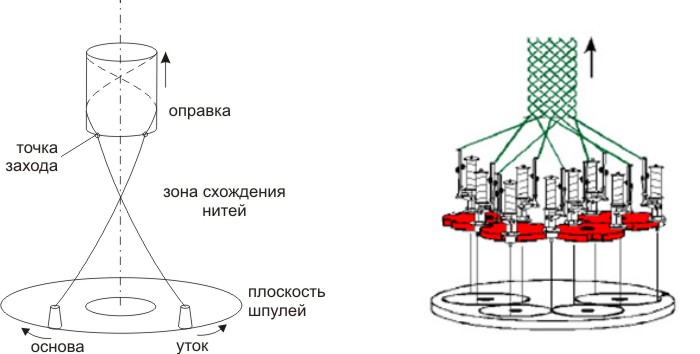
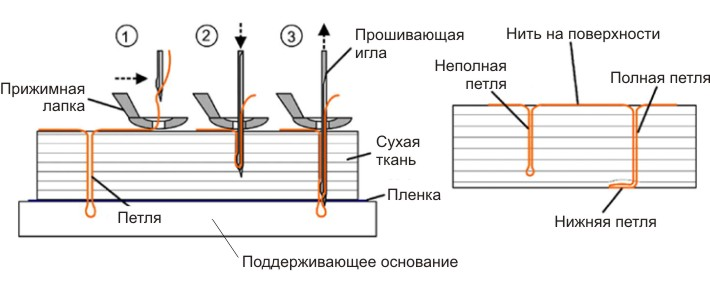
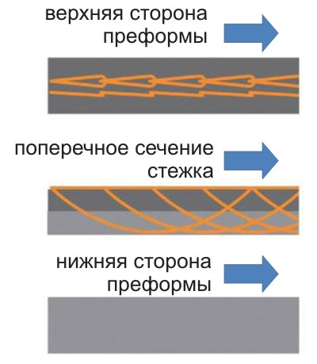

Прогрессивные Авиационно - Космические Технологии
Плетельная машина производства компании «Herzog» радиального типа для работы с углеродным ровингом в горизонтальном исполнении предназначена для оплетки деталей и изготовления рукавов, а также плоских триаксиальных тканей из углеродного, стеклянного и арамидного ровинга.
Конструкция машины, система управления и программное обеспечение обеспечивает работу машины с отдельно стоящим вытяжным устройством оправки мультироликового типа и многоосевым манипулятором KUKA по строго запрограммированному алгоритму.
Многоосевой манипулятор KUKA имеет 9 управляемых полностью синхронизированных осей, обеспечивает работу с прошивочными головками и адаптирован к перемещению оправок при работе с радиально-плетельной машиной Herzog.
Назначение:
- Прошивка многослойных преформ в трансверсальном направлении по поверхностям двойной кривизны.
- Изготовление многослойных преформ цилиндрического контура сложной формы с дальнейшей прошивкой преформ методом тафтинга различной толщины.
- Дополнительное поперечное армирование арамидными нитями комплексных преформ, состоящих из угле-, стекло- или органотканей, имеющих сложную объемную форму.
- Односторонняя поперечная прошивка арамидными нитями с целью созданию локальных усилений в комплексных пространственных преформах.
- Односторонняя прошивка пространственных многослойных преформ арамидной нитью с целью создания непрерывных локальных зон уплотнения для направления потока связующего при последующей пропитке преформ.
- Односторонняя локальная прошивка многослойных пространственных преформ с целью создания стопперов трещин.
- Армирование в поперечном направлении вспененных заполнителей авиационных многослойных панелей пространственной формы по тафтинговой технологии.
Назначение:
- Соединение отдельных частей субпреформ в единую комплексную пространственную преформу методом односторонней сшивки.
- Односторонняя поперечная сшивка многослойных преформ по криволинейной пространственной линии для формирования мест сгиба.
- Простегивание по всей поверхности пространственных преформ с целью уплотнения слоев для достижения заданной толщины.
- Соединение отдельных частей субпреформ (например, стрингеров на обшивке) в единую преформу.
Принцип создания потайного стежка:
Формирование шва происходит с помощью одной нити и одной изогнутой иглы при одностороннем подходе без проникновения иглы в опорное основание.
Вид шва на верхней стороне преформы: ниточная цепь с дополнительной нитью.
